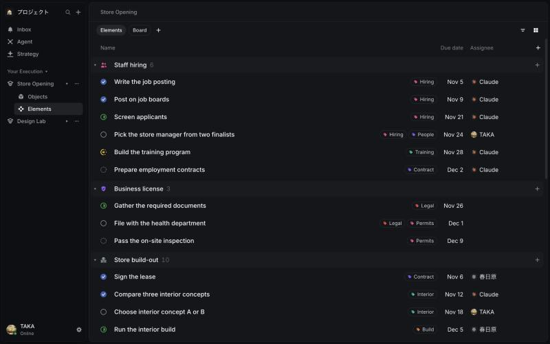

Collect the requests that reach your mail, chat and business apps, and manage them in Clayware.
Clayware connects to the services your organization uses. Each request is recorded as an Element (a unit of work) with an owner and a deadline, and can be followed in the list and on the board.
Where requests come from
Decided for every request
 Gmail
Gmail Microsoft 365
Microsoft 365 Google Drive
Google Drive
 GitHub
GitHub Slack
Slack Your systems (MCP, API)
Your systems (MCP, API)
Also Linear and Asana
- When
- Every task gets a deadline
- What
- Broken down to the smallest action
- Why
- Which goal it serves
- Who
- A person, or AI
Services you can connect, and what AI does in each
For each service, the operations AI may perform are defined in advance. Anything not defined is not run.
- GmailConnect with a Google account (OAuth). AI searches and reads mail, replies in the thread, adds labels and sends mail. Whether a send waits for a person’s approval is set by the Space’s approval setting. There is no operation that deletes mail.
- Microsoft 365Connect with a work or school account (OAuth). Some organizations require an administrator to approve Clayware first. Today this covers sign-in and administrator approval; operations on mail and calendars are planned.
- Google DriveConnect with a Google account (OAuth). AI can read and write only the files Clayware created and the files you pick.
- GitHubConnect with a GitHub account (OAuth). Review and merge pull requests inside Clayware. AI works with repositories, issues and pull requests, and changes code in an isolated environment before opening a pull request.
- SlackConnect by registering a token. AI reads channel messages and posts messages.
 LinearConnect by registering a token (MCP). AI searches issues, projects and cycles, and updates them.
LinearConnect by registering a token (MCP). AI searches issues, projects and cycles, and updates them. AsanaConnect by registering a token. AI searches projects and tasks, and updates them.
AsanaConnect by registering a token. AI searches projects and tasks, and updates them.- Your systems (MCP, API)Register the URL and credentials of an MCP server or a REST API to connect your own systems and forms.
How requests come in
Work starts on its own from these three triggers, without anyone typing in the request.
| Trigger | Example | What happens |
|---|---|---|
| A set time | Every day at 9:00, weekdays at 8:30 (time and time zone) | Creates an Element in the chosen Object, assigns it to an AI worker and starts it |
| A notice from outside (webhook) | A form submission, a notice from another system | Puts what arrived into the Element’s description and starts it the same way |
| A change inside Clayware | Something was approved, a dependency finished, a row was added | Starts the next piece of work |
What happens after a request arrives
- Record itClassify the request and record it in a table. For an inquiry: received at, customer, category, urgency
- Set owner and deadlineA person or AI is made the owner by the rule written in the harness (the definition of how the work is done), and a deadline is set
- Do the workIf AI is the owner, it researches, drafts the reply and so on
- A person approvesOperations that can’t be undone, such as sending mail, are not run until a person approves


How connected services are kept safe
- Credentials are kept from AI
- Passwords and tokens are stored encrypted and never appear in what AI reads or in the values passed to its tools. They are added only to requests to the registered destination.
- Destinations are limited
- Outbound traffic is https only, never outside the registered URLs, and never to internal or local addresses.
- Only what was approved runs
- Approval is bound to the exact input that runs. If the content changes after approval, it does not run.
- Data is separated by organization
- Data is separated by Space (organization), with access set by database permissions. AI reads and writes only what the person who started the work can see.
- It stops on its own
- Bursts of writes to the same target, rising errors, or a first send to a new recipient stop the run and pass it to a person.
- A record of operations
- What AI did, what is waiting for approval, and what started automatically can be checked in each Element’s record.